Official user manual · Edition 1 · November 2026
DM LockGuard
The friendly guide.
Everything you need to set up DM LockGuard and use it every day: written for real people, with pictures, step-by-step instructions, a few jokes, and zero "just read the source code."

Photo: Sebastian Scholz (Nuki) on Unsplash. Shown for illustration; LockGuard works with the Eufy Smart Lock C30.
How to read this manual
A two-minute map of the map.
This manual is long because it covers everybody: the person installing LockGuard, the people running it, and the people simply opening doors. You don't need to read all of it. Find your role, read your chapter, and come back when something puzzles you.
The secret code of fonts and colours
Different kinds of information wear different "outfits", so you can tell at a glance what you're looking at:
Everyday reading
Like this sentence.
Atkinson Hyperlegible: a font designed to be easy to read, even for tired eyes.
Syntax (code you read)
LOCKGUARD_LOCK_DRIVERJetBrains Mono: setting names, file names, error codes. Copy these exactly; capitals matter.
Commands (things you run)
PS> php artisan migrate
Fira Code in a dark "terminal" box with a Copy button. The
PS> or $ at the start is the prompt; it is not copied.Alerts & cautions
STOP AND READ THIS
Barlow Condensed with a red stop sign or amber triangle. These protect your doors and your data.
Jokes
Why was the lock so calm? It had closure.
Patrick Hand. Totally optional. Mostly groan-worthy.
Headings
Chapter titles
Lexend: clean and wide, so you can scan quickly.
The five kinds of boxes
You'll also meet Jargon busters, which put the technical word next to a plain-English explanation, so you learn the real term and understand it:
Tech talkJargon
Specialised vocabulary used by a particular group, such as IT people, that outsiders often don't understand.
Plain talk
Words nerds use. This manual always translates them for you.
Table of contents
The contents are also in the left sidebar (tap on a phone). Press / anywhere to search.
- 0. How to read this manual
- 1. Welcome to DM LockGuard
- 2. Quick start
- 3. Installation & setup
- 4. A tour of the screens
- 5. User roles
- 6. Everyday how-tos
- 7. Invitations & Pip's training
- 8. Security & privacy, explained
- 9. Icons explained
- 10. The life of a lock command
- 11. Error codes explained
- 12. Troubleshooting
- 13. Glossary
- 14. About this manual
Welcome to DM LockGuard
What it is, how it works, and the one promise it never breaks.
DM LockGuard is a website and phone app that lets a building's owner decide who can open which door, when, and from which phone, and it writes down every single attempt.
Think of it as a very organised, very honest security guard who never sleeps. The guard holds the master list of who's allowed in, checks every request, passes approved ones to the lock, and keeps a diary of everything that happened.
What LockGuard does
Locks & unlocks
Open or lock your doors from a phone or computer. Works with the Eufy Smart Lock C30 (model T85D0).
Manages people
Seven ready-made roles, from the all-powerful Super Administrator to a cleaner who only gets Tuesdays.
Ties people to phones
Each person registers one phone. A stolen password alone can't open your door.
Invites & trains
Send an email invitation; Pip the paperclip teaches the newcomer before their phone works.
Watches for trouble
Repeated wrong passwords, jammed locks, low batteries and lost phones raise alerts.
Keeps a diary
A tamper-evident audit log records who did what, when, and from where.

How it works: the big picture
When you tap Unlock on your phone, the request takes a short trip. Your phone never talks to the lock directly, and it never sees the Eufy password. Everything goes through LockGuard, which checks you first.
Tech talkServer
A computer that runs software 24/7 and answers requests from other devices (clients) over a network.
Plain talk
The always-on computer that runs LockGuard. Your phone asks it questions; it answers.
Tech talkBackend / API
The server-side application logic, exposed through an Application Programming Interface: a set of web addresses (endpoints) that accept requests and return JSON data.
Plain talk
The "brain" in the back room. The app you see is the front desk; the backend is where decisions are made. The API is the hatch they pass notes through.
Tech talkBridge
A small Node.js service that holds the Eufy account session and translates LockGuard's commands into the Eufy cloud protocol (MQTT/HTTP).
Plain talk
A translator. LockGuard speaks "LockGuard", Eufy speaks "Eufy". The bridge speaks both.
Tech talkCloud
Servers operated by a provider (here, Eufy/Anker) and reached over the internet.
Plain talk
Someone else's computer, far away. The Eufy cloud relays messages to your lock.
The one promise: LockGuard never fibs about your door
A lot of apps show "Unlocked!" the moment you tap the button. LockGuard doesn't. It shows Unlocking… while the command travels, and switches to Unlocked only after the lock itself reports it. If the lock goes quiet, LockGuard says State unknown rather than guessing.
What LockGuard does not do (yet)
- It doesn't work with other lock brands. Today it supports the Eufy Smart Lock C30 (T85D0).
- It doesn't manage the keypad codes stored inside the lock. It keeps records about codes, but changing the real code is done in the Eufy app.
- Proximity ("walk up and it opens") unlocking isn't available yet, and no role includes it.
- Building-wide "lockdown" holds are not implemented yet.
Quick start
Up and running in about ten minutes.
Pick the path that matches you.
If someone invited you
- Open the email called "You're invited to DM LockGuard" and tap Accept Invitation. Use the phone you'll open doors with.
- Create your account. Your email is already filled in. Choose a password of at least 12 characters with letters and numbers.
- Do the training with Pip. Seven short lessons. Each one has a "Your turn" task; the Next button wakes up when you finish it.
- Pass the quiz. Five questions, and you need all five right. Miss one? Pip gives a hint and you try again. No limit, no shame.
- Register your phone. Enter your password once more. Done. Your phone is now your key.

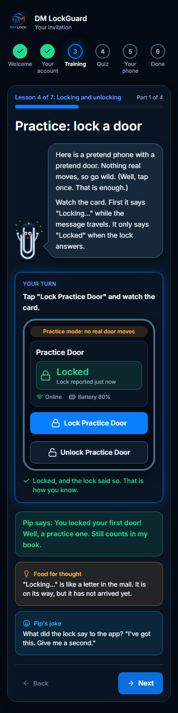
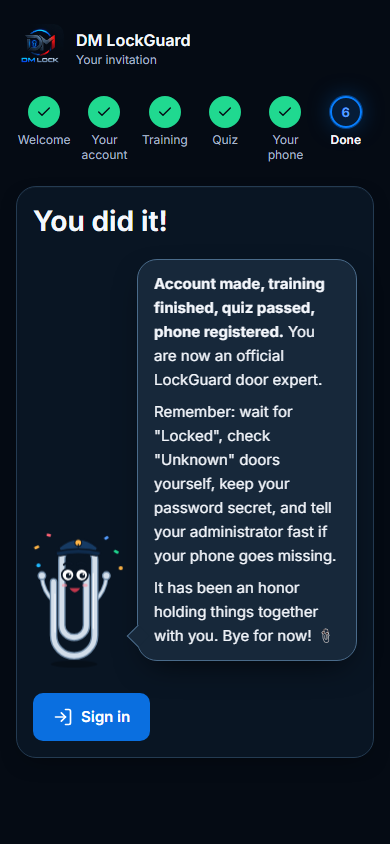
If you're setting LockGuard up
- Install it on a Windows or Linux server: see Chapter 3. Allow an afternoon the first time.
- Create the first Super Administrator with
php artisan lockguard:create-admin. - Connect your Eufy account through the bridge and register your locks.
- Set up email under Settings → Email settings so invitations can be delivered.
- Invite people under Access management → Invitations, then give each person access to the right locks on their user page.
Installation & setup
For the person installing LockGuard on a server. Grab a coffee.
This chapter takes you from an empty computer to a working LockGuard that people can reach from their phones. Every command has a Copy button. Run them in order.
3.1 What you need
| Thing | Version / detail | What it's for (plain talk) |
|---|---|---|
| A server | Windows 10/11 or Linux, always on, 4 GB RAM or more | The computer that runs LockGuard 24/7. |
| PHP | 8.x (developed on 8.5) with pdo_mysql, mbstring, openssl | The language the backend is written in. |
| Composer | 2.x | Downloads the PHP building blocks LockGuard uses. |
| MySQL | 8.x or newer | The database: LockGuard's filing cabinet. |
| Node.js | 20 or newer (developed on 24) | Builds the web app and runs the Eufy bridge. |
| Git | Any recent version | Downloads the LockGuard code. |
| Eufy account | A second account that your main Eufy account has shared the lock with | So LockGuard doesn't log your phone's Eufy app out. |
| Eufy Smart Lock C30 | Model T85D0, set up in the Eufy app | The actual lock on the actual door. |
| A domain + HTTPS (optional) | e.g. lockguard.example.com behind a reverse proxy | So phones can reach LockGuard from anywhere, securely. |
Tech talkDependency
An external software package that a program needs in order to run, installed by a package manager (Composer for PHP, npm for Node.js).
Plain talk
A ready-made part. Like buying wheels instead of inventing the wheel.
3.2 Get the code
Pick a folder (we'll use D:\lockguard) and download LockGuard into it:
git clone https://github.com/sumproguy99/DMLockGate.git D:\lockguardcd D:\lockguardThen install the building blocks for each of the three parts:
cd backend; composer install --no-dev --optimize-autoloader; cd ..cd frontend; npm ci; cd ..cd integrations\eufy; npm ci; cd ..\..3.3 Create the database
First create the settings file from the example, then run the database helper. It creates a lockguard database and user with a strong random password, and writes the connection details into backend\.env for you. It asks for your MySQL root password once and never stores it.
Copy-Item backend\.env.example backend\.envpwsh -File scripts\setup-mysql.ps13.4 Configure the backend
Open backend\.env in a text editor (Notepad is fine). These are the settings you must look at. Lines starting with # are comments.
APP_NAME="DM LockGuard"
APP_ENV=production
APP_DEBUG=false
APP_URL=https://lockguard.example.com
# The address people use in their browser. Invitation links point here.
LOCKGUARD_PUBLIC_URL=https://lockguard.example.com
# Which addresses may sign in with cookies (add your domain).
SANCTUM_STATEFUL_DOMAINS=lockguard.example.com,localhost,127.0.0.1
# How LockGuard talks to locks: unconfigured (sends nothing), fake (pretend lock), eufy_bridge (real)
LOCKGUARD_LOCK_DRIVER=unconfigured
# Unlocking away from the property: standard, step_up, location_required or disabled
LOCKGUARD_REMOTE_UNLOCK_POLICY=step_up
# One registered phone per person (recommended)
LOCKGUARD_DEVICE_BINDING=true
LOCKGUARD_DEVICE_BINDING_EXEMPT_ROLES=super_administrator,security_administratorNow generate the app's secret key, build the database tables, and load the built-in roles and permissions:
php artisan key:generatephp artisan migrate --seed --force Tech talkMigration
A versioned script that creates or changes database tables, so every installation's schema matches the code.
Plain talk
Building instructions for the filing cabinet. "Migrate" means "build or update the drawers."
Tech talkSeeding
Loading initial reference data into the database, here the permission catalog and the seven role templates.
Plain talk
Putting the first labelled folders into the new cabinet.
3.5 Create the first Super Administrator
The first account must be made at the server. Nobody can create it from the website, and that's on purpose.
php artisan lockguard:create-admin --name="Your Name" --email=you@example.comIt asks for a password twice (at least 12 characters, with letters and numbers). Typing doesn't show on screen. That's normal, not broken.
3.6 Build the web app
npm run buildThis turns the source code into fast, compact files in frontend\dist. Run it again every time you update LockGuard.
3.7 Connect your Eufy locks
Step A: configure the bridge. Create its settings file and fill it in:
Copy-Item .env.example .envnotepad .envEUFY_USERNAME=lockguard-account@example.com
EUFY_PASSWORD=the-second-accounts-password
EUFY_COUNTRY=US
# Shared secret: at least 32 random characters, the SAME value in backend\.env
LOCKGUARD_BRIDGE_SECRET=paste-a-long-random-secret-here
BRIDGE_HOST=127.0.0.1
BRIDGE_PORT=8788
# Where the bridge reports lock events (your API address)
LOCKGUARD_EVENTS_URL=http://127.0.0.1:8100/api/internal/eufy/eventsMake a good random secret with this one-liner and paste it in both files:
-join ((48..57)+(65..90)+(97..122) | Get-Random -Count 48 | ForEach-Object {[char]$_})Step B: tell the backend to use the bridge. In backend\.env:
LOCKGUARD_LOCK_DRIVER=eufy_bridge
LOCKGUARD_BRIDGE_URL=http://127.0.0.1:8788
LOCKGUARD_BRIDGE_SECRET=the-same-long-random-secretStep C: start the bridge (leave this window open):
npm run bridgeStep D: find and register your locks. First add a property (a building or home) in the web app under Properties, note its number (ID), then:
php artisan lockguard:sync-locks --register --property=1New locks arrive with commands switched off, for safety. Open Locks, choose a lock, and turn Commands on when you're ready.
Step E: give yourself access. LockGuard never lets anyone change their own access from the website (so no one can quietly promote themselves). If you're the only administrator, do it at the server:
php artisan lockguard:grant-lock-access you@example.com 13.8 Start the background workers
LockGuard has three jobs that must keep running. Each gets its own window (or Windows service):
| Job | Command | What it does |
|---|---|---|
| API | php artisan serve --host=127.0.0.1 --port=8100 | Answers the app's questions. |
| Queue worker | php artisan queue:work --tries=1 | Delivers lock commands and emails in the background. |
| Scheduler | php artisan schedule:work | Every minute: expires stale commands and checks alerts. Every 5 minutes: syncs lock states. Daily: deletes old location data. |
| Web app | npx vite preview (in frontend) | Serves the built screens on port 4173 and passes /api to the API. |
# Window 1php artisan serve --host=127.0.0.1 --port=8100# Window 2php artisan queue:work --tries=1# Window 3php artisan schedule:work# Window 4npx vite preview Tech talkPort
A numbered endpoint (0–65535) on a host that a network service listens on, e.g. 8100 for the API.
Plain talk
Like apartment numbers in one building. The computer is the building; each program lives at its own number.
3.9 Set up email
Invitations are emails, so LockGuard needs an email account to send from. Sign in as Super Administrator and open Settings → Email settings.
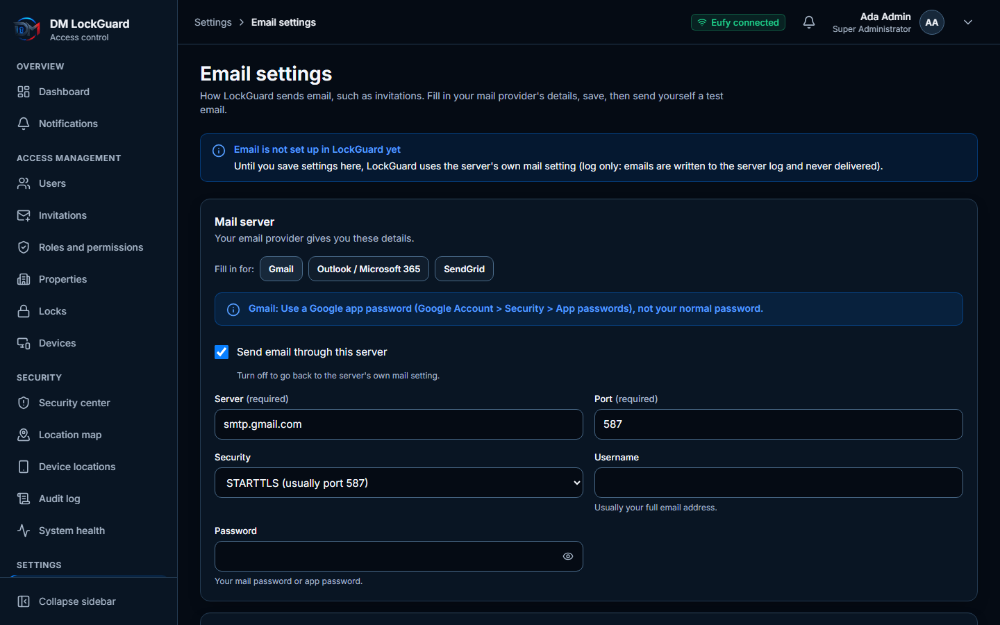
Email settings. The Gmail button fills in the server, port and security for you." width="1440" height="900" loading="lazy">- Click a provider button (Gmail, Outlook / Microsoft 365 or SendGrid) to fill in the technical bits.
- Enter the username (usually your full email address) and password. For Gmail, use an App Password: Google Account → Security → 2-Step Verification → App passwords. Your normal Gmail password won't work.
- Enter the "From" address and name people will see, e.g.
DM LockGuard. - Tick "Send email through this server" and click Save. LockGuard asks for your password again to confirm it's you.
- Click "Send test email" and check your inbox (and spam folder).
Tech talkSMTP
Simple Mail Transfer Protocol: the standard way programs hand outgoing email to a mail server, usually on port 587 (STARTTLS) or 465 (TLS).
Plain talk
The post office counter for email. LockGuard walks up, hands over the letter, and the mail server delivers it.
3.10 Put it online (HTTPS)
To use LockGuard from phones outside your network, point a domain name at your server and put a reverse proxy with a free HTTPS certificate in front of port 4173. (The original installation uses Nginx Proxy Manager with Let's Encrypt.)
- DNS: create a record for
lockguard.example.compointing at your server's public address. - Proxy: forward
https://lockguard.example.comtohttp://127.0.0.1:4173, with a Let's Encrypt certificate and "Force SSL" on. - Tell LockGuard its name: set
LOCKGUARD_PUBLIC_URLand add the domain toSANCTUM_STATEFUL_DOMAINSinbackend\.env. For the web app, setLOCKGUARD_PUBLIC_HOSTS=lockguard.example.combefore runningnpx vite preview. - Trust the proxy: list its address in
LOCKGUARD_TRUSTED_PROXIESso LockGuard sees visitors' real addresses.
Tech talkHTTPS / TLS certificate
HTTP over TLS: traffic is encrypted, and a certificate signed by a trusted authority proves the server's identity.
Plain talk
The padlock in your browser bar. It means nobody in between can read or change what you send, and you're really talking to your server.
3.11 Launch checklist
Tick these off as you go. Your ticks are remembered on this computer.
3.12 Settings reference
All in backend\.env. Change one, then restart the API and queue worker.
| Setting | Default | What it controls |
|---|---|---|
LOCKGUARD_LOCK_DRIVER | unconfigured | How commands reach locks. unconfigured sends nothing (safe default), fake is a pretend lock for testing, eufy_bridge is real. |
LOCKGUARD_REMOTE_UNLOCK_POLICY | step_up | Remote unlocking: standard, step_up (re-enter password), location_required, or disabled. |
LOCKGUARD_STEP_UP_SECONDS | 600 | How long a "confirm it's you" check lasts (10 minutes). |
LOCKGUARD_CONFIRM_TIMEOUT_SECONDS | 45 | How long LockGuard waits for the lock to confirm before saying "unknown". |
LOCKGUARD_COMMAND_TTL_SECONDS | 30 | A command not sent within this time expires, so an old tap can't open the door later. |
LOCKGUARD_STATE_STALE_SECONDS | 900 | After 15 minutes without news, a lock's state is shown as "stale". |
LOCKGUARD_DEVICE_BINDING | true | One registered phone per person. |
LOCKGUARD_DEVICE_BINDING_EXEMPT_ROLES | super_administrator, security_administrator | Roles that may sign in from any device. |
LOCKGUARD_UNLOCK_REQUIRES_TRUSTED_DEVICE | false | If true, unlocking needs a device marked "Trusted". Locking never does. |
LOCKGUARD_INVITATION_DAYS | 7 | How long an invitation link works. |
LOCKGUARD_PUBLIC_URL | (your domain) | The address used in invitation emails. |
LOCKGUARD_LOCATION_RETENTION_DAYS | 30 | Location records older than this are deleted daily. |
LOCKGUARD_ALERT_FAILED_SIGN_INS | 5 in 15 min | Wrong-password attempts that raise an alert. |
LOCKGUARD_ALERT_DENIED_REQUESTS | 3 in 15 min | Refused lock requests that raise an alert. |
LOCKGUARD_ALERT_BATTERY_LOW_PERCENT | 25 (critical 10) | Battery levels that raise low and critical alerts. |
LOCKGUARD_NOTIFICATIONS_PER_HOUR | 20 | Cap on notifications per person per hour, so nobody gets spammed. |
LOCKGUARD_TRUSTED_PROXIES | 127.0.0.1,::1 | Proxies whose "real visitor address" header LockGuard believes. |
A tour of the screens
Where everything lives, on a computer and on a phone.
LockGuard has two faces. On a computer you get the full control centre with a sidebar. On a phone you get a simple app with big buttons and a bar along the bottom. Same LockGuard, same rules, same account.
Signing in
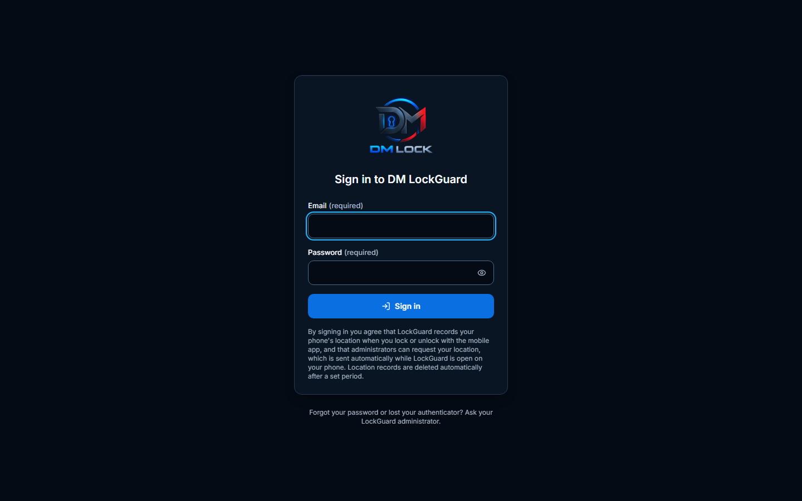
The sign-in page. Email and password, then a 6-digit code if you've turned on two-step sign-in." width="1440" height="900" loading="lazy">If you're bound to one phone and sign in on a different device, LockGuard asks for a registration code instead of letting you in. That's device binding doing its job (see Chapter 8).
The computer layout

Left: the sidebar
Grouped into Overview, Access management, Security and Settings. Items you're not allowed to use are hidden, so a Resident's sidebar is short and an administrator's is long.
Top: status bar
Breadcrumbs (where you are), the Eufy connected badge, the notifications bell, and your name and role. Click your name to sign out.
| Sidebar item | What's there | Who sees it |
|---|---|---|
| Dashboard | Your locks, the Eufy connection and security counts | Everyone |
| Notifications | Messages and alerts addressed to you | Everyone |
| Users | Everyone's accounts: create, edit, suspend, roles, lock access | Anyone with a user-management permission |
| Invitations | Send, resend and cancel email invitations | Can create users |
| Roles and permissions | What each role includes | Anyone with a user-management permission |
| Properties | Buildings or homes that group locks | Integration settings (Super Administrator) |
| Locks | Every lock: state, battery, connection, commands on/off, who has access | Can view lock status or devices |
| Devices | Your phones and browsers; with permission, everyone's | Everyone |
| Security center | Alerts and incidents | Can view incidents |
| Location map | Where shared locations were reported | Can view location history |
| Device locations | Locations per device, and silent location requests | Can view location history |
| Audit log | The tamper-evident diary of everything | Can view incidents |
| System health | Is the bridge, Eufy cloud and database OK? | Integration settings or view incidents |
| Email settings | The mail server used for invitations | Configure notifications |
The phone layout
Open LockGuard on a phone and it switches to the mobile app automatically (the address ends in /m). The bottom bar has four buttons:
HomeYour doors, with big Lock/Unlock buttons.
ActivityWho opened what, and when (if you may view history).
DevicesYour doors' details and your registered phone.
MoreAccount, location sharing, notifications, help, sign out.
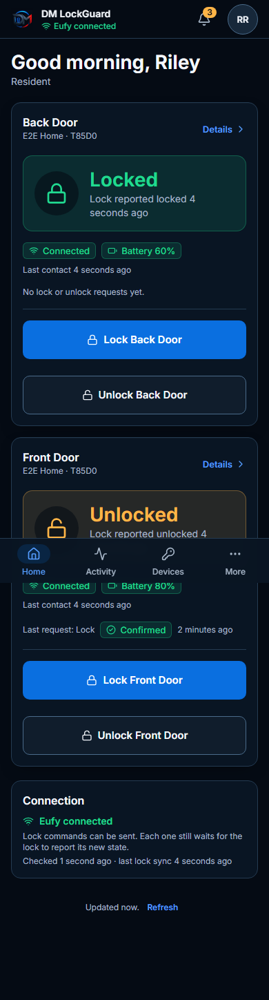
Home. One card per door." width="390" height="1448" loading="lazy">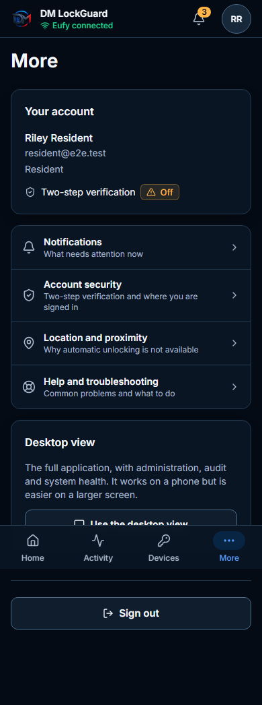
More. Settings and help." width="390" height="1046" loading="lazy">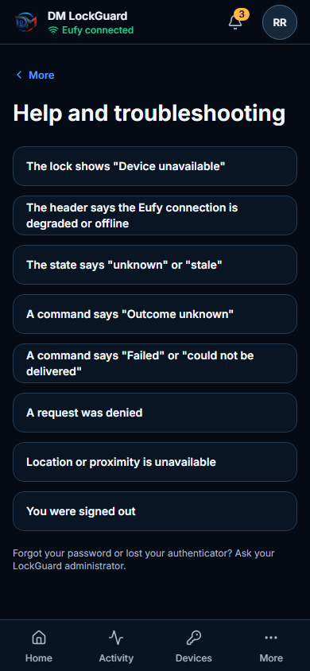
Help. Built-in answers." width="390" height="844" loading="lazy">Anatomy of a lock card

- Name and place: "Front Door · E2E Home · T85D0" (door, property, lock model). Tap Details for more.
- The big status: what the lock itself last reported, and how long ago.
- Health badges: Connected and Battery 80%, plus when the lock last checked in.
- Buttons: Lock and Unlock. You only see the ones your role allows.
- The receipt: after a command, a checklist shows each stage: Request received → Authorization completed → Command submitted → Integration response received → Physical state confirmed.
What the big status words mean
| You see | It means | What to do |
|---|---|---|
| Locked | The lock reported it's locked. | Nothing. Relax. |
| Unlocked | The lock reported it's unlocked. | Lock it when you're done. |
| Locking… / Unlocking… | Your command is travelling. The door hasn't changed yet. | Wait a few seconds. |
| State unknown | The lock hasn't said anything LockGuard can trust. | Check the door with your eyes. |
| State stale | The last report is old (15+ minutes). | Tap Refresh; check the door if it matters. |
| Device unavailable | The lock is offline (Wi-Fi, batteries, or the Eufy cloud). | See Troubleshooting. |
| Jammed | The bolt couldn't move. Something's in the way. | Check the door frame and bolt by hand. |
User roles
Who can do what, who can't, and why. With a story for every role.
Every LockGuard account has a role. A role is a ready-made bundle of permissions: small "yes, you may" switches such as Lock a door or Suspend an account.
Tech talkRole-based access control (RBAC)
An authorization model in which permissions are attached to roles and users receive permissions by being assigned roles, rather than permission by permission.
Plain talk
Instead of handing out keys one at a time, you hand out key rings. "Resident" is a key ring; "Super Administrator" is the janitor's giant key ring.
Tech talkPermission
A named capability, e.g. lock.unlock, checked by the server on every request. Anything not explicitly allowed is denied (deny by default).
Plain talk
One single "you're allowed to do this" switch. If the switch isn't on, the answer is no.
The server decides
Hiding a button isn't security. LockGuard's server checks every permission on every request, so even a clever person with a hacked app gets "no".
Doors are given separately
A role says what you may do; lock access says which doors. Even a Super Administrator can't open a door until they've been given access to it.
Overrides exist
An administrator can add a single extra permission (or block one) for one person, without inventing a new role.
The comparison chart
This is the whole story on one page. Read a column to see everything one role can do, or a row to see who can do one thing. ✓ = included, ✗ = not included. Click a role's name to jump to its section.
| Feature | Super Administrator | Security Administrator | Property Manager | Resident | Temporary Guest | Service Provider | Read-Only Auditor |
|---|---|---|---|---|---|---|---|
| Doors (only the doors you have been given) | |||||||
See doors and their status lock.view_status | ✓ | ✓ | ✓ | ✓ | ✓ | ✓ | ✓ |
Lock a door lock.lock | ✓ | ✓ | ✓ | ✓ | ✓ | ✓ | ✗ |
| Unlock a door from the app | ✓ | ✗ | ✓ | ✓ | ✓ | ✓ | ✗ |
↳ basic unlock permission lock.unlock | ✓ | ✗ | ✓ | ✓ | ✓ | ✓ | ✗ |
↳ remote unlock permission lock.remote_unlock | ✓ | ✗ | ✓ | ✓ | ✓ | ✓ | ✗ |
Walk-up proximity unlock lock.proximity_unlock | ✗ | ✗ | ✗ | ✗ | ✗ | ✗ | ✗ |
See door history lock.view_history | ✓ | ✓ | ✓ | ✓ | ✗ | ✗ | ✓ |
| People | |||||||
Create people & send invitations users.create | ✓ | ✗ | ✓ | ✗ | ✗ | ✗ | ✗ |
Edit people's details users.edit | ✓ | ✗ | ✓ | ✗ | ✗ | ✗ | ✗ |
Suspend an account users.suspend | ✓ | ✓ | ✓ | ✗ | ✗ | ✗ | ✗ |
Reactivate an account users.reactivate | ✓ | ✓ | ✓ | ✗ | ✗ | ✗ | ✗ |
Revoke an account for good users.revoke | ✓ | ✓ | ✗ | ✗ | ✗ | ✗ | ✗ |
Assign roles users.assign_roles | ✓ | ✗ | ✗ | ✗ | ✗ | ✗ | ✗ |
Add individual permission overrides users.modify_permissions | ✓ | ✗ | ✗ | ✗ | ✗ | ✗ | ✗ |
| Access to doors | |||||||
Give someone access to a lock access.grants_create | ✓ | ✗ | ✓ | ✗ | ✗ | ✗ | ✗ |
Take lock access away access.grants_revoke | ✓ | ✓ | ✓ | ✗ | ✗ | ✗ | ✗ |
Manage access schedules access.schedules_manage | ✓ | ✗ | ✓ | ✗ | ✗ | ✗ | ✗ |
Manage keypad-code records access.codes_manage | ✓ | ✗ | ✓ | ✗ | ✗ | ✗ | ✗ |
Sync keypad codes to the lock access.codes_sync | ✓ | ✗ | ✗ | ✗ | ✗ | ✗ | ✗ |
| Phones & browsers | |||||||
See everyone's devices devices.view | ✓ | ✓ | ✓ | ✗ | ✗ | ✗ | ✗ |
Enroll devices for people devices.enroll | ✓ | ✗ | ✗ | ✗ | ✗ | ✗ | ✗ |
Rename devices devices.rename | ✓ | ✗ | ✗ | ✗ | ✗ | ✗ | ✗ |
Switch off (revoke) a device devices.revoke | ✓ | ✓ | ✗ | ✗ | ✗ | ✗ | ✗ |
Sign someone out everywhere devices.revoke_sessions | ✓ | ✓ | ✗ | ✗ | ✗ | ✗ | ✗ |
| Location & privacy | |||||||
Share own location for access location.use | ✓ | ✗ | ✗ | ✓ | ✗ | ✗ | ✗ |
See current location reports location.view_reports | ✓ | ✓ | ✗ | ✗ | ✗ | ✗ | ✗ |
See location history & map location.view_history | ✓ | ✗ | ✗ | ✗ | ✗ | ✗ | ✗ |
Change location policies location.manage_policies | ✓ | ✗ | ✗ | ✗ | ✗ | ✗ | ✗ |
Review who looked at locations location.review_audit | ✓ | ✓ | ✗ | ✗ | ✗ | ✗ | ✓ |
| Administration | |||||||
Eufy integration, properties & lock setup admin.integration_settings | ✓ | ✗ | ✗ | ✗ | ✗ | ✗ | ✗ |
Security policies admin.security_policies | ✓ | ✓ | ✗ | ✗ | ✗ | ✗ | ✗ |
Notifications & email settings admin.notifications | ✓ | ✓ | ✗ | ✗ | ✗ | ✗ | ✗ |
See alerts, incidents & audit log admin.incidents_view | ✓ | ✓ | ✗ | ✗ | ✗ | ✗ | ✓ |
Handle alerts & incidents admin.incidents_manage | ✓ | ✓ | ✗ | ✗ | ✗ | ✗ | ✗ |
Export reports admin.reports_export | ✓ | ✓ | ✗ | ✗ | ✗ | ✗ | ✓ |
Audit retention settings admin.audit_retention | ✓ | ✗ | ✗ | ✗ | ✗ | ✗ | ✗ |
| Everyone, always | |||||||
| Own account, password & two-step sign-in | ✓ | ✓ | ✓ | ✓ | ✓ | ✓ | ✓ |
| Own registered phone (see, trust, sign out) | ✓ | ✓ | ✓ | ✓ | ✓ | ✓ | ✓ |
| Own notifications | ✓ | ✓ | ✓ | ✓ | ✓ | ✓ | ✓ |
How many permissions each role has
There are 35 permissions in total. Bigger bar = bigger key ring.
How the roles relate to each other
Think of three layers. The Super Administrator runs the whole system. Two managers look after it: the Property Manager handles people and access, and the Security Administrator handles threats and safety. Below them, four door users and an observer use or review it.
The three golden rules between roles
No self-service
Nobody can change their own account, roles or door access from the website. Ask another administrator. (Error self_modification_forbidden.)
No promoting past yourself
You can only hand out administrative powers you already have. A Property Manager can't create a Security Administrator. (Error target_outranks_actor.)
Door access is the exception
Everyday door permissions (lock, unlock, history, location) aren't "admin powers", so a manager may give them even though they're not part of their own job.
Tech talkPrivilege escalation
Gaining permissions beyond those intended, for example by granting oneself or an accomplice a more powerful role. LockGuard prevents it with a per-actor permission 'ceiling'.
Plain talk
Sneakily giving yourself (or a friend) a bigger key ring. LockGuard simply won't let you.
Who is tied to one phone?
With device binding on (the default), everyone signs in only on their one registered phone, except the Super Administrator and Security Administrator, who may need to respond from any computer during an emergency.
Super Administrator
Super Administrator
Full control of LockGuard, including the Eufy integration and security settings.
34 / 35permissions
Any devicenot tied to one phone
Usually 1–2people (the owner)
Everythingin the sidebar
Can
- Everything in the comparison chart, apart from proximity unlocking
- Connect Eufy, add properties, register locks, turn commands on/off
- Create people, send invitations, assign any role
- Add individual permission overrides
- Change security, location and audit-retention policies
- View the location map and device locations
- Configure email settings
Cannot
- Change their own roles, permissions or door access from the website
- Open a door they haven't been given access to
- Use proximity unlocking (not in any role)
- Edit what a role contains (roles are fixed; use overrides)
- Rewrite or delete history in the audit log
Relationships: sits at the top. Creates the first Property Managers and Security Administrators and can manage every account, except their own. If there are two Super Administrators, they look after each other's accounts; if there's only one, door access for themselves is given at the server (lockguard:grant-lock-access).
Scenario
D
Dana owns a 12-flat building
Super AdministratorDana installs LockGuard over a weekend. On Saturday she registers the Front Door and Bike Store locks, turns commands on, and sets up Gmail in Email settings. On Sunday she invites Marcus as Property Manager and Priya, an IT friend, as Security Administrator. From Monday on, Dana mostly glances at the Dashboard: Marcus handles the tenants, and Priya gets the alerts. Dana still has the master key ring; she just doesn't need to carry it around every day.
How to: add a property and register a lock
- Properties → Add a property. Give it a name (e.g. "Maple Court") and its time zone. Schedules use this time zone.
- Locks → Register a lock, or run
lockguard:sync-locks --registerat the server. LockGuard asks you to confirm your password. - Open the lock and switch Commands on when you're happy. Until then LockGuard refuses every command for that lock.
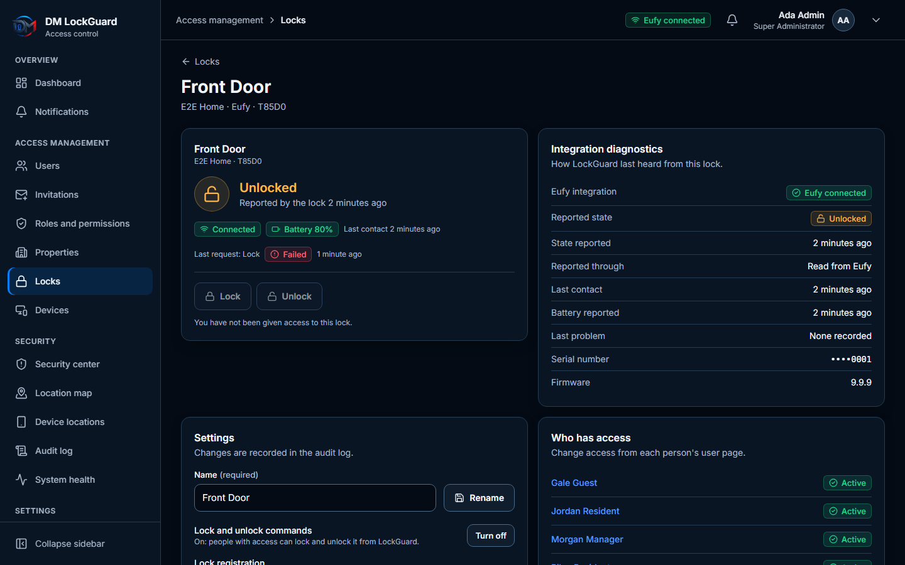
A lock's page: status, battery, connection, the Commands switch, and who has access." width="1440" height="900" loading="lazy">How to: add an individual permission override
- Users → click the person → Roles and permissions tab.
- Add an override: pick the permission (e.g. Request remote unlocking), choose Allow (or Deny to block something their role normally gives), and add a reason.
- Check the preview, which highlights sensitive changes, then save and confirm your password.
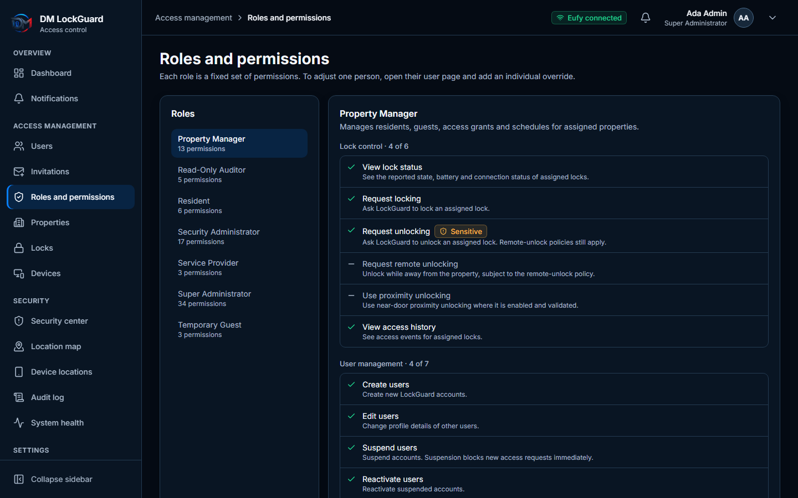
Roles and permissions: each role's exact contents. Sensitive permissions carry an amber badge." width="1440" height="900" loading="lazy">How to: check the audit log hasn't been tampered with
php artisan lockguard:audit-verifySecurity Administrator
Security Administrator
Manages account security, devices, incidents and security policies.
17permissions
Any devicenot tied to one phone
Alwaysgets security notifications
Focusstop threats fast
Can
- See door status and history; lock doors they have access to (e.g. in an emergency)
- Suspend, reactivate and permanently revoke accounts
- Take away someone's door access
- See everyone's devices, switch off (revoke) a lost phone, sign people out everywhere
- See current location reports and review who viewed locations
- Change security policies and notification/email settings
- See, acknowledge and resolve alerts; open and run incidents
- Export reports
Cannot
- Unlock doors (on purpose: the safety role closes doors, it doesn't open them)
- Create people, send invitations, or edit their details
- Assign roles or add overrides
- Give anyone door access
- Change the Eufy integration, properties or audit retention
- See the location history map
Relationships: the counterweight to the Property Manager. The Property Manager lets people in; the Security Administrator can stop anyone below the Super Administrator, instantly. The Read-Only Auditor reviews the Security Administrator's work afterwards through the audit log.
Scenario
P
Priya and the 2 a.m. buzz
Security AdministratorAt 2:04 a.m. Priya's phone buzzes: Repeated failed sign-ins on Jordan's account, then New device sign-in. Jordan is a resident who's asleep. Priya opens the Security center, suspends Jordan's account (new requests stop instantly), uses Sign out everywhere, and opens an incident. In the morning Jordan explains their old tablet was stolen. Priya revokes that device, reactivates Jordan, resolves the alert and closes the incident with notes. Total sleep lost: 11 minutes.
How to: handle an alert
- Security center → open the alert. Read what triggered it and who's involved.
- Acknowledge it so everyone knows you're on it. Some alerts (offline lock, low battery) resolve themselves when the problem clears; you just acknowledge those.
- Act: suspend the account, sign them out everywhere, revoke a device, or lock a door.
- Resolve the alert, or open an incident if it needs investigating.
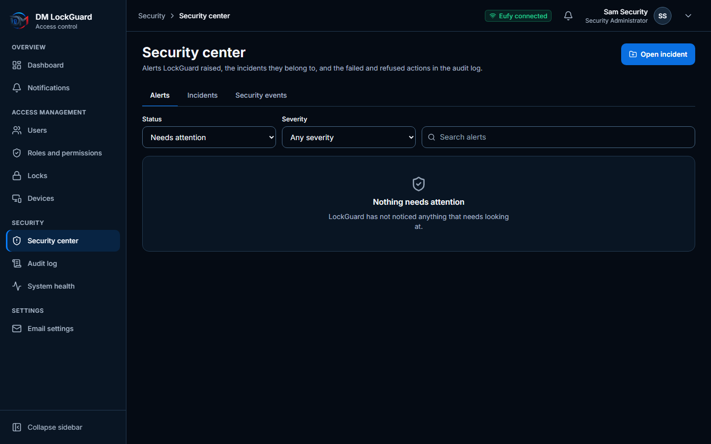
The Security center, as a Security Administrator sees it." width="1440" height="900" loading="lazy">How to: run an incident from start to finish
New: just opened. Acknowledged: someone owns it. Investigating: finding out what happened. Contained: the danger is stopped (account suspended, phone revoked). Resolved: fixed. Closed: filed away for good; a closed incident can't be changed, so open a new one if it flares up again.
Tech talkIncident response
A structured process for detecting, containing, eradicating and recovering from a security event, with documentation at each stage.
Plain talk
A fire drill for computer trouble: notice it, stop it spreading, fix it, write down what happened.
Property Manager
Property Manager
Manages residents, guests, access grants and schedules for assigned properties.
13permissions
One phonedevice binding applies
Dailymove-ins, move-outs, contractors
Focuspeople & doors
Can
- See door status and history; lock doors they have access to
- Create people and send email invitations
- Edit people's details; suspend and reactivate accounts
- Give and take away lock access, with start and end times
- Manage access schedules and keypad-code records
- See everyone's registered devices
Cannot
- Assign roles or add overrides (by default)
- Permanently revoke accounts
- Revoke devices or sign people out everywhere
- See alerts, incidents, the audit log or locations
- Touch the Eufy integration, properties, policies or email settings
Relationships: reports to the Super Administrator, who usually assigns the roles of the people the Property Manager invites. Works alongside the Security Administrator: if a tenant's phone goes missing, the manager calls security to revoke it. Manages Residents, Temporary Guests and Service Providers day to day.
Scenario
M
Marcus and the Friday shuffle
Property ManagerFriday at Maple Court: flat 4 moves out, flat 7 moves in, and a plumber is booked for Saturday 9–12. Marcus suspends the old tenant of flat 4 (they can't open anything from that second on), sends an invitation to the new tenant of flat 7, and gives Pat the plumber access to the Back Door from Saturday 09:00 until 12:00. At 12:01 on Saturday Pat's access simply stops. No keys changed hands, and nobody had to remember to "take the key back".
How to: invite a new person
- Access management → Invitations → Invite someone.
- Type their email (and name, if you like). Add a short personal note; it appears in the email.
- Send. LockGuard asks you to confirm your password, then shows the held registration code once. You won't normally need it.
- Watch progress in the list: Waiting to accept → training (e.g. "3 of 7 lessons done") → Completed.
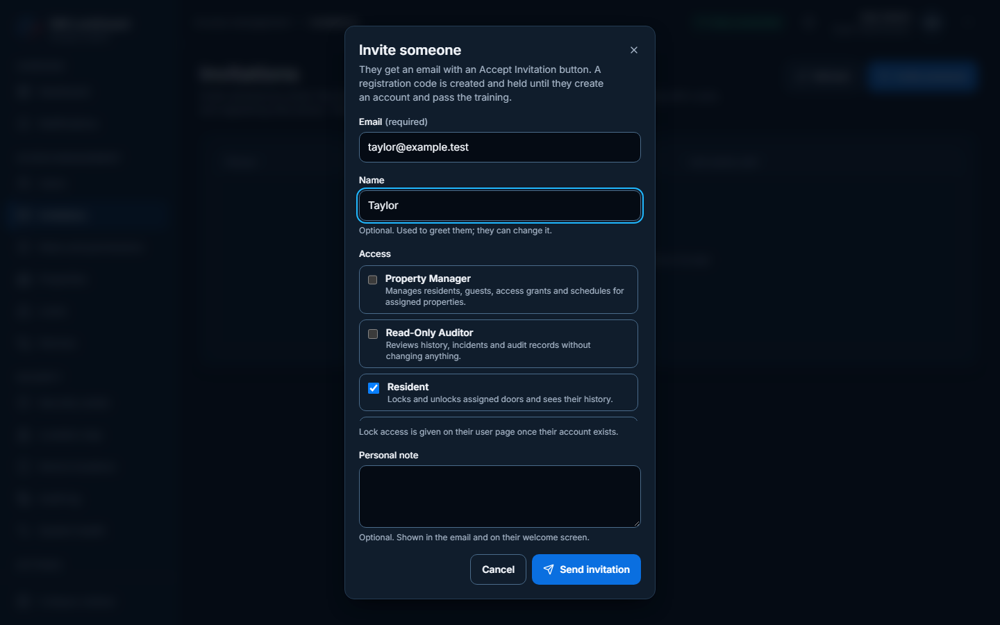
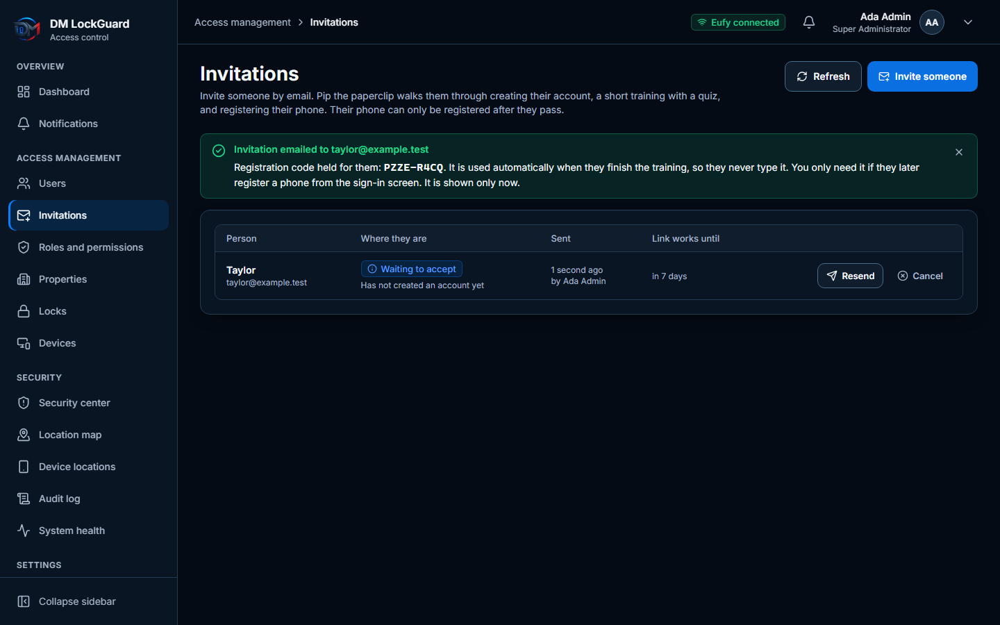
How to: give someone access to a door (with a time limit)
- Users → click the person → Lock access tab.
- Choose the lock. Optionally set From and Until. Leave From empty to start now, and Until empty for no end.
- Give access. It shows up under "Locks this person can use".
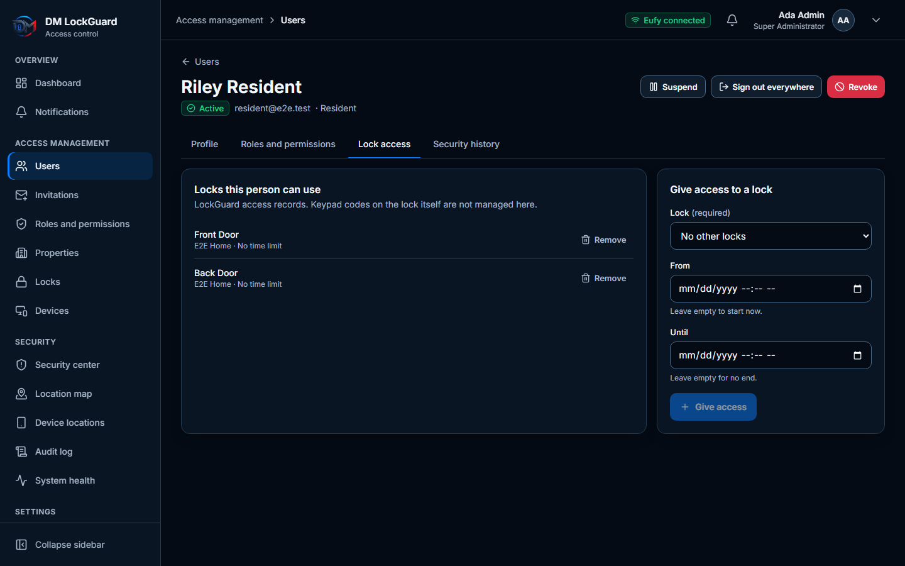
Lock access tab: current doors on the left, "Give access to a lock" on the right." width="1440" height="900" loading="lazy">How to: handle a move-out
- Suspend the account (Users → person → Suspend). New requests are blocked immediately.
- Remove their lock access on the Lock access tab.
- Ask Security to revoke their phone if it might be misused, or a Super Administrator to Revoke the account for good.
Resident
Resident
Locks and unlocks assigned doors and sees their history.
6permissions
One phonedevice binding applies
Home, Activitymainly the phone app
Focusgetting in and out
Can
- See their doors' status, battery and connection
- Lock and unlock their doors, including from away (remote unlock, with a password check if the policy asks)
- See the history of their doors
- Share their location when LockGuard asks for it
- Manage their own account, two-step sign-in and registered phone
Cannot
- Open doors they weren't given access to
- Invite, create or change other people
- Give anyone else access (no sharing of the "key")
- See alerts, the audit log or other people's devices
- Use LockGuard from a second phone without a new registration code
Relationships: invited and looked after by the Property Manager. Protected by the Security Administrator, who can switch off a lost phone. Their actions appear in the audit log that the Read-Only Auditor reviews.
Scenario
R
Riley and the grocery bags
ResidentRiley arrives home with six bags of shopping and no free hands. Elbow-tap on the LockGuard icon, Unlock Front Door, confirm. The card shows Unlocking… and then Unlocked once the lock reports in. Later, on the sofa, Riley wonders whether they locked up. One look at Home: Locked, reported by the lock 2 minutes ago. Riley stays on the sofa.
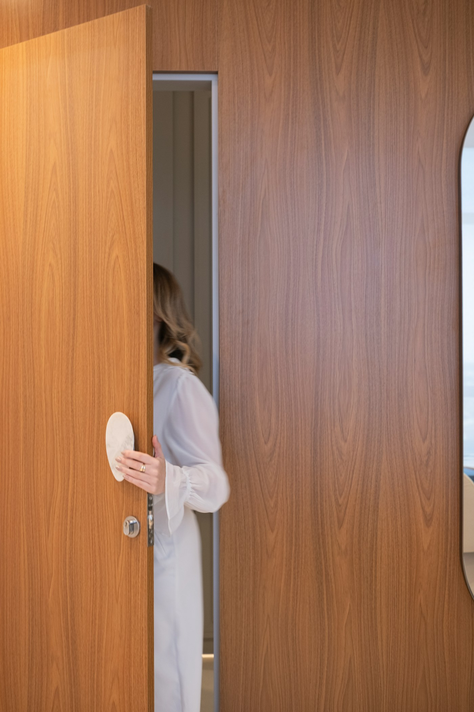
How to: lock a door
- Home → find the door's card.
- Tap "Lock Front Door". It shows Locking…; the old state stays until the lock reports.
- Wait for Confirmed and the big green Locked.
How to: unlock a door
- Tap "Unlock Front Door".
- Read the warning and tap Unlock. Anyone at the door can open it until it's locked again.
- Confirm it's you if asked (password or code). This lasts about 10 minutes.
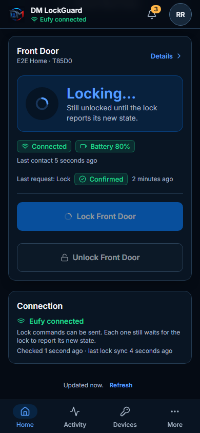
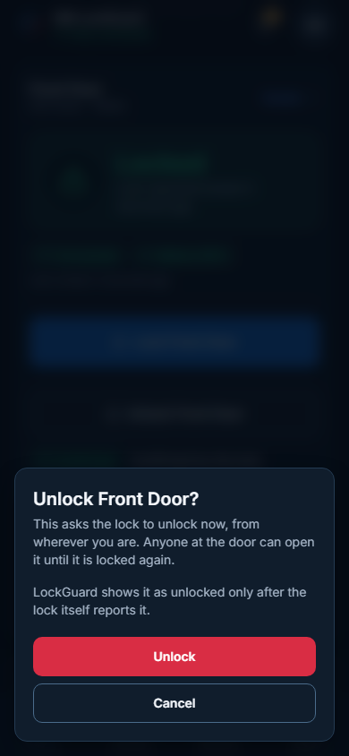
How to: see who came and went
Tap Activity on the bottom bar. Each line shows the door, the action, who did it, and the result.
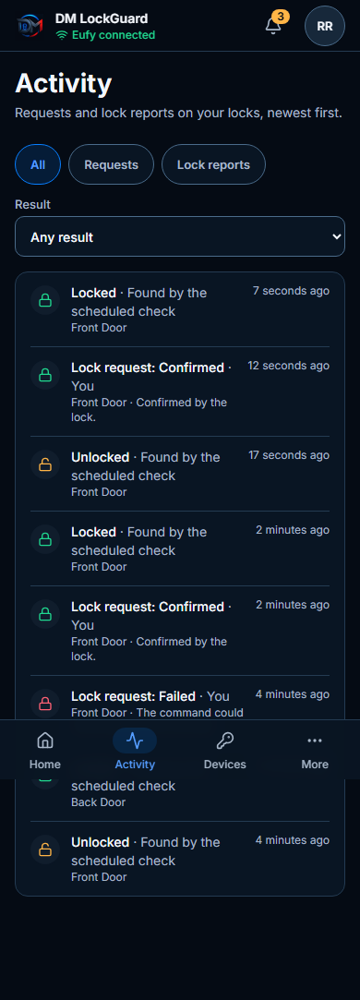
Activity: the history of your doors." width="390" height="1083" loading="lazy">Temporary Guest
Temporary Guest
Time-limited access to assigned doors.
3permissions
One phonedevice binding applies
Time-boxedaccess has an end date
Focusa short visit
Can
- See the status of the doors they were given
- Lock and unlock those doors from the app, during their access window
- Manage their own account and phone
Cannot
- Use any door outside their time window (
outside_access_window) - See door history (no Activity tab)
- Share location, see other people, or manage anything
- Keep access after the end date. It stops on its own.
Relationships: created by a Property Manager or Super Administrator, usually with a From/Until window on each lock. Exactly like a Service Provider in permissions; the different name just makes lists and reports easier to read.
Scenario
G
Gale visits for the weekend
Temporary GuestGale is staying with Riley from Friday to Sunday. Marcus invites Gale and gives the Front Door access from Friday 15:00 to Sunday 18:00. Gale does Pip's training on the train. All weekend Gale can see the Front Door and lock it behind them. From Sunday 18:00, LockGuard refuses Gale's requests with "Your access to this lock has ended." No "can I have the key back?" text needed.

How to: use your guest access
- Accept the invitation and finish Pip's training on the phone you'll use.
- Open LockGuard to see the door(s) you were given and when your access ends.
- Lock the door whenever you leave, and check it says Locked.
Service Provider
Service Provider
Scheduled access for contractors and service staff.
3permissions
One phonedevice binding applies
Scheduledby visit or by day
Focusdo the job, leave
Can
- See the status of the doors needed for the job
- Unlock them to get in, and lock them when finished
Cannot
- Use doors outside the scheduled window
- See history, other people, or any admin screens
- Pass access on to a colleague. Each worker needs their own account.
Relationships: set up by the Property Manager, usually with access only for the visit. The Security Administrator can cut access instantly if something seems wrong. Every entry is visible to the Auditor.
Scenario
P
Pat the plumber
Service ProviderPat fixes the boiler at Maple Court every few months. Marcus gave Pat a Service Provider account last year. Each time a job is booked, Marcus gives the Back Door access for that morning only. Pat arrives, gets in, fixes the boiler, taps Lock Back Door on the way out, and sees Confirmed. Marcus can see exactly when Pat came and went, and so can Pat if anyone ever asks.
Read-Only Auditor
Read-Only Auditor
Reviews history, incidents and audit records without changing anything.
5permissions
One phonedevice binding applies
Look, don't touchno buttons that change things
Focuschecking the checkers
Can
- See door status and full door history (for doors they have access to)
- See alerts, incidents and the audit log
- Review who viewed location data
- Export reports
Cannot
- Lock or unlock anything
- Change people, access, devices or settings
- Acknowledge or resolve alerts
- See the location history map itself
Relationships: independent on purpose. The Auditor watches what everyone does, including the administrators, and can't be "managed around" because the audit log can't be edited by anyone.
Scenario
A
Avery's quarterly check
Read-Only AuditorAvery works for the insurance company. Every three months Avery signs in, filters the audit log to "permission changes" and "unlocks after midnight", and exports a report. One quarter Avery spots that a contractor kept access for two extra weeks, and flags it to Marcus. Avery fixed nothing personally, and couldn't have, but made sure it got fixed.
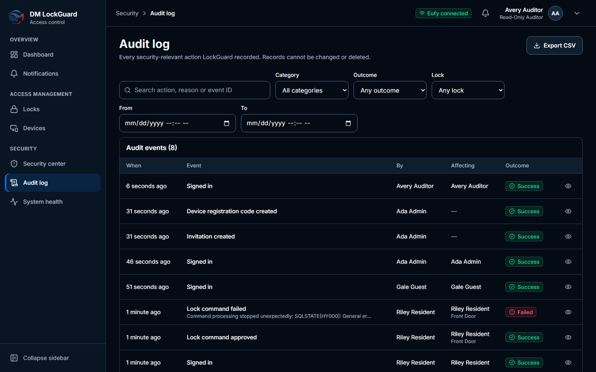
The audit log, as the Auditor sees it: read-only, filterable, exportable." width="1440" height="900" loading="lazy">How to: review the audit log
- Security → Audit log.
- Filter by category, outcome (success, denied, failed…), lock, and a From/To date range.
- Open an event to see every detail: who, what, when, from which device and network address.
- Export what you need for your report. The export itself is recorded in the audit log too.
Tech talkAudit trail (hash chain)
An append-only log in which each record includes a cryptographic hash of the previous record, so altering or deleting any entry breaks the chain and is detectable.
Plain talk
A diary where every page includes a fingerprint of the page before. Rip a page out or change a word, and the fingerprints stop matching.
Everyday how-tos
Things everybody does, whatever their role.
Sign in (and sign out)
- Open LockGuard at your building's address (for example
https://lockguard.example.com). - Enter your email and password and tap Sign in.
- If asked, type the 6-digit code from your authenticator app.
- To sign out: on a phone, More → Sign out; on a computer, click your name (top right) → Sign out.
Turn on two-step sign-in
Two-step sign-in means a thief needs your password and your phone. It takes two minutes.
- Install an authenticator app on your phone: Google Authenticator, Microsoft Authenticator, 1Password, Authy… any will do.
- In LockGuard, open the Account page (phone: More → Account) and choose Two-step verification.
- Scan the QR code with the authenticator app, or type the key shown under it.
- Type the 6-digit code the app shows, and confirm your password.
- Save your recovery codes somewhere safe (a password manager or printed in a drawer). Each one works once if you lose your phone. They're shown only once.
Tech talkTwo-factor authentication (2FA / MFA)
Authentication using two independent factors: something you know (password) and something you have (a device generating time-based one-time passwords, TOTP).
Plain talk
A second lock on your account. Even if someone learns your password, they still need the code that only your phone can make, and it changes every 30 seconds.
Forgot your password?
- On the sign-in page, tap "Forgot your password?" and type the email of your LockGuard account.
- Open the email "Reset your DM LockGuard password" and tap Choose a new password. The link works once, for an hour. Check spam if it isn't there after a few minutes.
- Pick a new password: at least 12 characters, with letters and numbers, and not the one you had.
- Sign in again on your registered phone. A reset signs you out everywhere, and you get a "password was changed" email.
"Confirm it's you" (step-up)
Before risky actions (unlocking remotely, sending an invitation, changing settings) LockGuard may ask for your password or code again, even though you're already signed in. That proof lasts about 10 minutes.
Tech talkStep-up authentication
Re-verifying a signed-in user's identity immediately before a sensitive operation, raising the session's assurance level for a short period.
Plain talk
Like a cashier asking for ID only when you buy something expensive. You're already in the shop; this is just for the big stuff.
Your phone and other devices
Open Devices to see every phone and browser signed in to your account.
Trust this device
Marks a device as one you keep with you. Your administrator can require a trusted device for unlocking. Only trust your own phone, never a shared or work computer.
Sign out everywhere else
Ends every other session at once, while keeping this one signed in. Use it if you signed in on a friend's laptop and forgot to sign out.
Rename
Give devices names you'll recognise: "Riley's iPhone" beats "Safari on iOS 19".
Registered phone
With device binding on, one phone is the phone for your account. A new phone needs a new registration code.
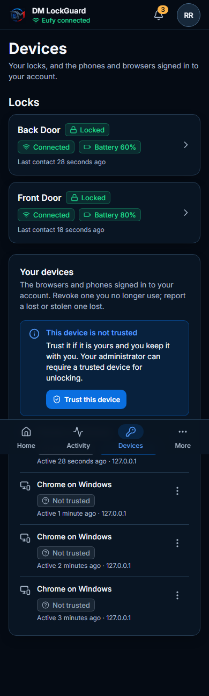
Devices on a phone." width="390" height="1293" loading="lazy">Got a new phone?
- Ask your administrator for a registration code. They get one from your user page (Devices), or at the server with
lockguard:device-code. - On the new phone, open LockGuard, sign in, and type the code when asked (it looks like
ABCD-1234). - Done. Ask for the old phone to be revoked if you're giving it away.
php artisan lockguard:device-code riley@example.comLost your phone? Do this right away
Location sharing
Some setups use your phone's location for access decisions or safety. Here's exactly what happens:
What is recorded
Where your phone is when you press Lock or Unlock in the app, and, if an administrator asks, your current location while LockGuard is open on your phone. Nothing is tracked in the background.
Who can see it
Administrators with the location-history permission (by default only the Super Administrator). Every look is itself recorded, and Auditors can check who looked.
How long it's kept
30 days by default, then deleted automatically every night.
Your own history
More → Location and proximity shows each time your location was shared. You can always see your own record.
Tech talkGeofence
A virtual geographic boundary (a radius around a point) used to trigger or allow actions when a device's reported location is inside it.
Plain talk
An invisible circle drawn on the map around the building. Inside the circle: "near the door". Outside: "away".
Notifications
The bell shows a number when something needs your attention: an alert, an invitation update, a lock that went offline. Open Notifications to read them and mark them read. Security Administrators always receive security notifications. LockGuard caps notifications at 20 per hour per person, so a broken lock can't bury you.
Choose how you're told. Open Notifications > Preferences (on a phone: Notifications > Notification preferences). For each kind of alert (security, removed devices, lock problems, batteries, the lock integration) tick In LockGuard, By email, both or neither, then Save preferences. Emails go to your account's address; ask an administrator to change it.
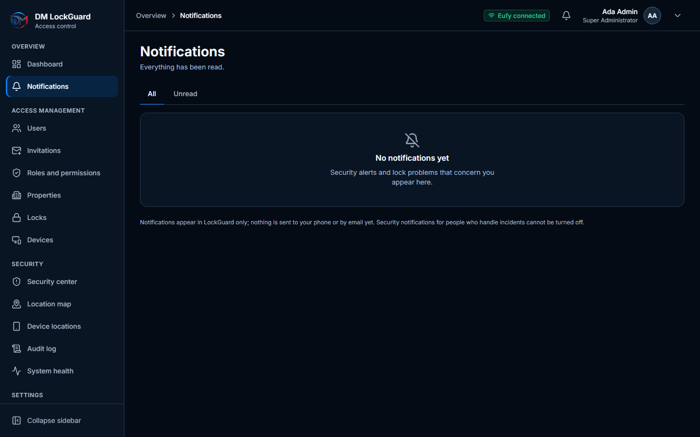
Notifications on a computer." width="1440" height="900" loading="lazy">Change your name, email or password
For safety, people can't change these themselves. Ask your Property Manager or Super Administrator. (This stops someone who borrows your unlocked phone from taking over your account.)
Invitations & Pip's training
How new people join: by email, with a paperclip for a teacher.
An invitation is the friendliest way to add someone. They get an email, create their own account, learn how LockGuard works with Pip the paperclip, pass a short quiz, and only then can their phone open a door.
For the person sending it
- Access management → Invitations → Invite someone. Enter email, name, roles (if you may assign roles) and an optional personal note.
- Send and confirm your password. LockGuard emails a link that works for 7 days, and holds a registration code for that email address.
- Track progress in the list. Resend makes a fresh link (the old one stops working) and gives 7 more days. Cancel kills the link and the held code.
- After they finish, give them lock access on their user page. Invitations carry roles, not door access.
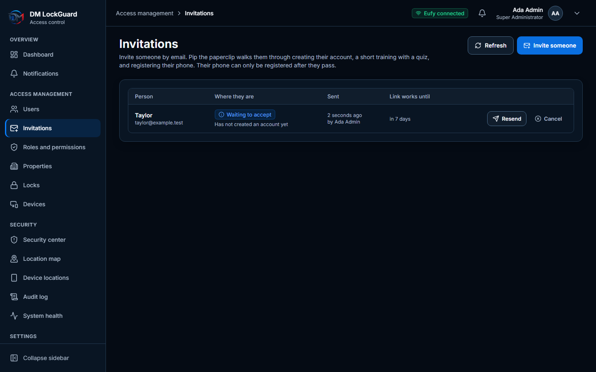
The invitations list shows where each person is in the journey." width="1440" height="900" loading="lazy">| Status in the list | Meaning |
|---|---|
| Waiting to accept | Email sent; they haven't created their account yet. |
| In training | Account created; working through the lessons or the quiz (e.g. "3 of 7 lessons done"). |
| Phone not registered | Training passed; registering the phone is the last step. |
| Completed | All done; the phone is registered. |
| Expired / Cancelled | The link no longer works. Resend or send a new invitation. |
For the person receiving it
Meet Pip, a cartoon paperclip in a security guard's cap. Pip waves, points, thinks, cheers and occasionally looks very surprised. Pip will:
- walk you through creating your account
- teach 7 short lessons, one small part at a time
- give you a "Your turn" task in every part: tap, sort, put in order, or try the practice door
- share a Food for thought idea and a joke after each task
- give you a 5-question quiz (all answers must be right; hints if not)
- register your phone at the end

The seven lessons
| # | Lesson | You'll learn |
|---|---|---|
| 1 | Meet LockGuard | What LockGuard is and who Pip is |
| 2 | One phone, one you | One device per person; never share your password |
| 3 | Reading the door card | Locked, Unlocked and Unknown, and what to do with each |
| 4 | Locking and unlocking | Practise on a pretend door; wait for the confirmation |
| 5 | Your location | When location is shared and who can see it |
| 6 | Door safety | Strangers, tailgating, and leaving properly |
| 7 | Getting help | Where help lives, and what to do if a phone is lost |
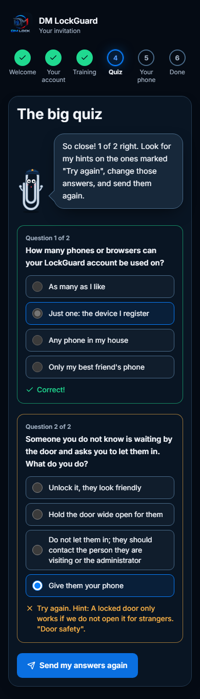
Security & privacy, explained
The invisible guards, and what they protect.
LockGuard stacks several protections, so that if one fails, the next one catches it. Security people call this defence in depth.
Tech talkDefence in depth
A security strategy that layers multiple independent controls so that the failure of one control does not compromise the system.
Plain talk
Castle thinking: moat, wall, gate, guards, locked tower. A burglar has to beat all of them, not just one.
The layers, from the outside in
| Layer | What it stops | Plain talk |
|---|---|---|
| HTTPS | Eavesdropping and tampering on the network | Nobody on the café Wi-Fi can read your password. |
| Password + rate limits | Guessing passwords | Too many wrong tries and LockGuard makes you wait. |
| Two-step sign-in | Stolen passwords | The thief also needs your phone. |
| Device binding | Logging in from someone else's phone | Your account only works on your registered phone. |
| Step-up checks | A borrowed, unlocked phone | Risky actions ask "is it really you?" again. |
| Roles + lock access + schedules | People doing more than they should | The right door, for the right person, at the right time. |
| Anti-escalation rules | Insiders promoting themselves | Nobody hands out powers they don't have, or changes their own. |
| Command expiry | Old taps opening the door later | An unlock that couldn't be sent within 30 seconds is cancelled. |
| Tamper-evident audit | Covering your tracks | Every action is written down, and edits show. |
| Alerts & incidents | Problems nobody noticed | LockGuard taps the Security Administrator on the shoulder. |
Device binding, in detail
When binding is on, each person (except Super and Security Administrators) gets one registered device. LockGuard recognises a device by a long random cookie it stores in that browser. Signing in elsewhere triggers device_registration_required: you need a one-time registration code from an administrator to move to a new phone.
Tech talkCookie
A small piece of data a website stores in your browser and receives back on every request; LockGuard's device cookie is HTTP-only, so page scripts cannot read it.
Plain talk
A name tag the website sticks on your browser so it recognises it next time. You can't see it, and other websites can't read it.
Remote unlocking and its policy
The Super Administrator chooses one policy for unlocking from the app:
standard
Signed in + allowed = unlock. Simplest.
step_up (default)
Also re-confirm your password or code (valid ~10 minutes). Recommended.
location_required
Also needs a recent location report. Location-aware access isn't finished yet, so this currently refuses remote unlocks.
disabled
No remote unlocking at all. Locking still works.
The audit log
Every sign-in, lock command, permission change, export and setting change creates an audit record: who, what, which door or person, when, from which device and address, and whether it succeeded, was denied, or failed. Records are chained with fingerprints (hashes). The database protection script (scripts\protect-audit-log.ps1) can additionally stop the app's own database user from editing or deleting them.
pwsh -File scripts\protect-audit-log.ps1Every security alert, explained
| Alert | Severity | What happened | What to do |
|---|---|---|---|
| Repeated failed sign-ins | High | 5+ wrong passwords in 15 minutes for one account | Check with the person; suspend if it wasn't them |
| Repeated denied lock requests | Medium | 3+ refused lock requests in 15 minutes | Someone is trying doors they shouldn't, or their access expired |
| Repeated lock command failures | High | 3+ commands couldn't reach a lock in 30 minutes | Check the lock's Wi-Fi, batteries and the bridge |
| Lock command outcome unknown | Medium | A command was sent but the lock never confirmed | Check the door physically |
| Administrative permission granted | Medium | Someone received admin powers | Confirm it was intended |
| Two-step sign-in turned off | Medium | An account lost its second factor | Ask why; turn it back on |
| Recovery code used | Low | Someone signed in with a backup code | Make sure it was the owner (lost phone?) |
| Sign-in from a new device | Low | An account signed in on a device it never used before | The owner is told; investigate if they say "not me" |
| Revoked device used | High | A switched-off device tried to get in | Possible theft; the device stays blocked |
| Device reported lost | High | A device was reported lost | Confirm it's revoked; issue a new code |
| Lock integration unavailable | High–Critical | The bridge or Eufy cloud is down or needs a new login | See Troubleshooting |
| Lock offline | High | A lock stopped talking | Batteries, Wi-Fi, distance to the router |
| Lock jammed | High | The bolt couldn't move | Check the door frame and bolt |
| Lock state not confirmed | Medium | No trustworthy state report for a while | Check the door |
| Lock battery low | Medium–High | Battery at 25% or less (High at 10% or less) | Replace the batteries soon (or now) |
| Audit record could not be written | Critical | The diary failed to save an entry | Fix the database immediately |
| Audit protection missing | Critical | Audit records could be edited | Run protect-audit-log.ps1 |
Your privacy
- Passwords are stored as one-way scrambles (hashes), never as plain text. Nobody can read yours, not even the Super Administrator.
- Two-step sign-in keys and the email password are stored encrypted.
- Location is only recorded at lock/unlock time or when an administrator asks while the app is open, is kept 30 days by default, and every view of it is audited.
- The Eufy password lives only on the server (in the bridge). Phones never see it.
Tech talkHash
A one-way cryptographic function (LockGuard uses bcrypt for passwords) that turns input into a fixed-length fingerprint which cannot feasibly be reversed.
Plain talk
A blender for text. You can turn a strawberry into a smoothie, but you can't turn the smoothie back into the strawberry. To check a password, LockGuard blends what you typed and compares smoothies.
Icons explained
Every little picture in LockGuard, and what it means.
LockGuard uses simple line icons. Colours add meaning: green = good / locked amber = attention / unlocked red = problem / danger grey = unknown blue = information / in progress.
Locks and doors
LockedThe lock reported locked. Also the Lock button.
UnlockedThe lock reported unlocked. Also the Unlock button.
State unknown / staleNo trustworthy report. Check the door.
Device unavailableThe lock or the connection to it is offline.
ConnectedThe lock (or Eufy) is reachable.
Battery fullPlenty of power.
Battery mediumFine for now.
Battery lowUnder 25%. Buy batteries.
Battery criticalUnder 10%. Replace now.
Devices / accessDoors you can use (phone bottom bar).
PropertyA building or home that groups locks.
RefreshFetch the latest state now.
Results and messages
Confirmed / successDone, and verified.
Step completeA ticked stage in a command's receipt.
Mark all readClear the notification list.
Failed / errorSomething didn't work. Read the message.
Denied / cancelNot allowed, or cancel this.
WarningNot broken, but pay attention.
InformationUseful context.
HelpExplanations and answers.
RevokePermanently switch off an account or device.
Not availableFeature off or not possible here.
IncidentA security problem being handled.
Security failureA security check failed.
Navigation and screens
DashboardThe overview page.
HomePhone home screen.
NotificationsA number means unread messages.
No notificationsAll quiet.
UsersPeople and accounts.
Add userCreate an account.
InvitationsInvite by email.
Send / resendSend the invitation or email.
Email settingsThe mail server.
Roles and permissionsAlso "trusted" and "two-step on".
DevicesPhones and browsers.
A phoneAlso "Device locations".
A computerA desktop browser.
Security centerAlerts and incidents.
Location mapWhere locations were reported.
A locationOne reported position.
Request locationAsk a phone where it is.
Audit logThe diary of everything.
Activity / System healthHistory, or how the system is doing.
MoreExtra options.
HelpThe built-in help page.
Sign outEnd your session.
Actions
Edit / renameChange a name or detail.
RemoveRemove access or an item.
SaveKeep your changes.
AddAdd something new.
SearchFind people or devices.
FilterNarrow a list.
ExportDownload a report (it's audited).
Show / viewReveal a password or open details.
HideHide the password again.
SuspendPause an account.
ReactivateUn-pause an account.
UndoGo back a step.
Opens elsewhereA link to another page or site.
DetailsOpen the next page.
Collapse sidebarMore room on screen.
IntegrationThe Eufy connection.
DisconnectedThe integration is unplugged.
Food for thoughtIn Pip's lessons.
Pip's jokeIn Pip's lessons.
The life of a lock command
What really happens between your tap and the click of the bolt.
Each tap becomes an access request that moves through stages. The receipt under the lock card shows them as ticks.
| Stage | What LockGuard says | Plain talk |
|---|---|---|
received / authenticating | Checking your request. | "Who's there?" |
authorized / queued | Approved. Sending to the lock. | "You're on the list." |
submitted | Sent. Waiting for the lock to report its new state. | The message is on its way to the door. |
confirmed_success | Confirmed by the lock. | The bolt moved, and the lock says so. |
denied | Not allowed. | A rule said no. The reason is shown (see error codes). |
failed | The command could not be delivered to the lock. | It never got there. The door didn't change. |
unknown_result | The lock did not confirm in time. Check the door before trying again. | Maybe it worked, maybe not. Look. |
already_in_state | The lock already reported that state just now. Nothing was sent. | It's already locked, silly. |
expired | The request expired before it could be sent. Nothing was sent. | Too slow; cancelled for safety. |
cancelled | Cancelled. Nothing was sent to the lock. | Called off. |
Before any command is sent, LockGuard runs its checks in order: account active → device allowed → lock registered and commands on → permission → lock access → time window → remote-unlock policy → identity confirmed → location (if required) → lock not busy. The first "no" wins, and its reason is what you see.
Error codes explained
When LockGuard says no, it always says why.
Every refusal comes with a short code (like no_lock_access) and a human message. The message is for you; the code is for searching this table, and for telling support exactly what you saw.
First, the number family
Each error also has a three-digit HTTP status. You rarely see it, but it tells you what kind of no it is:
400
Bad request: the app sent something odd.
401
Not signed in (or the sign-in expired).
403
Signed in, but not allowed.
404
Not found.
409
Conflict: not possible right now, in this state.
410
Gone: it existed, but is finished for good.
419 / 422
Session expired / some fields need fixing.
429 / 500
Too many tries, slow down / the server tripped.
Tech talkHTTP status code
A three-digit number in every web response: 2xx success, 4xx client-side problem (the request), 5xx server-side problem.
Plain talk
The web's traffic light. 200s are green, 400s mean "you can't do that", 500s mean "oops, our fault".
Every code, A to Z
| Code | HTTP | What it means (plain talk) | What to do |
|---|---|---|---|
account_inactive | 403/409 | The account is suspended, revoked or expired. | Ask an administrator to reactivate it. |
account_revoked | 403 | This account was revoked. That's permanent. | A new account is needed. |
address_not_allowed | 403 | This account only works from one approved network address (e.g. a lobby kiosk). | Use it from the approved place. |
alert_not_open | 409 | The alert was already acknowledged or resolved. | Refresh; someone beat you to it. |
alert_resolved | 409 | The alert is already resolved. | Nothing to do. |
alert_resolves_itself | 409 | This kind of alert clears itself when the problem is fixed. | Acknowledge it; fix the cause. |
csrf_token_mismatch | 419 | Your page was open so long the session's safety token expired. | Reload the page and try again. |
device_already_revoked | 409 | That device is already switched off. | Nothing to do. |
device_already_trusted | 409 | That device is already trusted. | Nothing to do. |
device_belongs_to_other | 403 | This phone is registered to someone else. | Use your own phone. |
device_binding_not_required | 409 | This person isn't tied to one phone, so needs no code. | Just sign in. |
device_code_expired | 409 | The registration code was used, cancelled or expired. | Ask for a new code, or a resent invitation. |
device_is_current | 409 | You tried to revoke the device you're using. | Do it from another device, or sign out. |
device_not_trusted | 403 | Unlocking needs a trusted device here. | Devices → Trust this device (if it's yours). |
device_registration_required | 403 | This device isn't your registered one. | Enter a registration code, or use your registered phone. |
device_revoked | 403/409 | This device was removed from your account. | Sign in on another device, or ask an administrator. |
device_unknown | 409 | LockGuard doesn't recognise this browser. | Sign out, sign in again, retry. |
forbidden | 403 | You don't have permission for this. | Ask an administrator if you need it. |
http_error | varies | A general web error. | Retry; report the message if it persists. |
idempotency_conflict | 409 | The same request is already being processed (double tap). | Wait for the first one. |
idempotency_key_reused | 409 | An old request ID was reused for a different request. | Reload the page. |
incident_closed | 409 | Closed incidents can't change. | Open a new incident. |
incident_status_unchanged | 409 | The incident already has that status. | Choose a different status. |
invitation_cancelled | 410 | The invitation was cancelled. | Ask for a new one. |
invitation_completed | 410 | The invitation was already used. | Sign in with your email and password. |
invitation_expired | 410 | The 7 days ran out. | Ask the sender to press Resend. |
invitation_not_found | 404 | The link is wrong or incomplete. | Open the whole link from the email. |
invitation_wrong_step | 409 | You skipped ahead. | Finish the earlier steps first. |
lesson_out_of_order | 409 | Lessons must be done in order. | Finish the earlier lessons. |
lessons_incomplete | 409 | The quiz unlocks after all 7 lessons. | Finish every lesson. |
location_already_recorded | 409 | This request already has a location. | Nothing to do. |
location_request_closed | 409 | The location request was answered or expired. | Ask again if needed. |
location_unavailable | denied | The policy needs a recent location, and location-aware access isn't available yet. | An administrator should pick another remote-unlock policy. |
location_window_closed | 409 | Too late to add a location to that request. | Nothing to do. |
lock_busy | denied | Another command for this lock is still running. | Wait a few seconds. |
lock_commands_disabled | denied | Commands are switched off for this lock. | An administrator turns them on in Locks. |
lock_not_registered | denied | The lock isn't registered for use. | An administrator registers it. |
mfa_already_enabled | 409 | An authenticator app is already set up. | Remove it first to add a new one. |
mfa_enrollment_not_started | 409 | You confirmed before starting setup. | Start two-step setup again. |
mfa_session_expired | 401 | Too slow typing the 6-digit code. | Enter email and password again. |
no_lock_access | denied | You haven't been given this door. | Ask a Property Manager for access. |
not_found | 404 | That thing doesn't exist (or was removed). | Check the link; refresh. |
outside_access_window | denied | Your access hasn't started yet, or has ended. | Check your times with whoever invited you. |
permission_denied | denied | Your role lacks the needed permission (the message names it). | Ask for the permission, e.g. remote unlocking. |
proximity_unavailable | denied | Walk-up unlocking isn't available yet. | Use the Unlock button. |
remote_unlock_disabled | denied | Remote unlocking is switched off by policy. | Use a key or keypad; ask an administrator. |
remote_unlock_policy_invalid | denied | The remote-unlock setting is misconfigured, so LockGuard plays safe. | Administrator: fix LOCKGUARD_REMOTE_UNLOCK_POLICY. |
self_modification_forbidden | 403 | You can't change your own account here. | Ask another administrator. |
server_error | 500 | Something broke on the server. It was logged. | Retry later; tell your administrator. |
stateful_client_required | 400 | Use the LockGuard web or phone app, not another tool. | Open LockGuard in a browser. |
step_up_required | 403 | Confirm it's you first. | Re-enter your password or code. |
target_outranks_actor | 403 | That person has powers you don't, so you can't manage them. | Ask a more senior administrator. |
too_many_requests | 429 | Too many tries in a short time. | Wait a few minutes. |
training_required | 403 | Finish Pip's training before signing in. | Open the invitation email → Accept Invitation. |
unauthenticated | 401 | You're not signed in. | Sign in again. |
validation_failed | 422 | Some fields need attention (they're highlighted). | Fix the red fields and resend. |
Troubleshooting
Something's wrong? Start here.
Click a problem to open it. Each one lists the likely causes, most common first, and the fixes.
For everyone
The door says "State unknown" or "State stale"
Likely causes
- The lock hasn't reported in for a while (weak Wi-Fi, low batteries).
- The Eufy "Locked/Unlocked" notifications are off, so LockGuard never hears about changes.
Fixes
- Look at the door. Safety first.
- Tap Refresh.
- Tell your administrator if it keeps happening; they'll check batteries, Wi-Fi and the Eufy notifications.
I can't see an Unlock button
Likely causes
- Your role doesn't include unlocking (Security Administrator, Read-Only Auditor), or an administrator turned remote unlocking off for you with a Deny override.
- You haven't been given access to that door, or your time window isn't open.
- Commands are switched off for the lock.
Fixes
- Ask an administrator to check your role and overrides for Request unlocking and Request remote unlocking (how).
- Check your access times with whoever gave you access.
It asks me for a registration code
You're signing in on a device that isn't your registered one, or your browser forgot LockGuard (cleared data, private mode, different browser).
Fixes
- Use your registered phone, in the same browser as before.
- Or ask an administrator for a new registration code and type it in.
"Finish the LockGuard training" when I sign in
You were invited and haven't finished Pip's lessons and quiz yet (training_required). Open the invitation email and tap Accept Invitation; you'll continue where you left off. Link expired? Ask for a resend.
The invitation email never arrived
Fixes
- Check spam / junk / "Promotions".
- Administrator: look at the invitation in the list. A warning means sending failed; check Settings → Email settings, send a test email, then Resend.
- Gmail users: the password must be an App Password, not your normal one.
"This address cannot share your location"
Browsers only share location with https:// sites. Use the HTTPS address of LockGuard, and allow location when the browser asks (Settings → Safari/Chrome → Location if you said no before).
"Too many attempts. Wait a few minutes"
A safety brake after several wrong passwords, codes or registration codes. Wait the time shown (usually up to 15 minutes), then try carefully. Forgot your password? Use Forgot your password? on the sign-in page.
For administrators
Commands are refused: "Commands are turned off for this lock"
New locks start with commands off. Open Locks → the lock and turn Commands on (you'll confirm your password).
Commands say "Failed" or "Unknown result" all the time
Checklist
- Is the bridge running, and does its window show errors?
- Are
LOCKGUARD_BRIDGE_SECRETvalues identical in both.envfiles? - Is the queue worker running? Restart it after updates.
- Is
EUFY_MQTT_BROKER_IPset? Commands sent through the wrong Eufy server are accepted and silently dropped. Seedocs\EUFY_BRIDGE.md. - Lock Wi-Fi and batteries.
php artisan queue:restartphp artisan queue:work --tries=1The lock state is old or never updates
- Make sure the scheduler is running (it syncs every 5 minutes).
- In the Eufy app, turn on Locked and Unlocked notifications for the lock.
- Sync by hand:
php artisan lockguard:sync-locksNobody can sign in through the domain ("session expired" or 401)
The domain must be listed in SANCTUM_STATEFUL_DOMAINS, and the web app must be told its public host name. Update backend\.env, then clear the cached settings:
php artisan config:clearThen restart the API and, for the web app, set the host before starting it:
$env:LOCKGUARD_PUBLIC_HOSTS = "lockguard.example.com"npx vite previewI'm the only administrator and "You have not been given access to this lock"
Nobody can give themselves access through the website. Do it at the server:
php artisan lockguard:grant-lock-access you@example.com 1The only Super Administrator is locked out
Create a second Super Administrator at the server, sign in as them, and fix the first account (reactivate, sign out everywhere, or issue a device code).
php artisan lockguard:create-admin --name="Backup Admin" --email=backup@example.com"Something went wrong on the server"
Read the newest lines of the log for the real reason:
Get-Content storage\logs\laravel.log -Tail 60Common causes: the database is down (start MySQL), a migration wasn't run after an update (php artisan migrate --force), or the disk is full.
How do I update LockGuard safely?
git pullcd backend; composer install --no-dev --optimize-autoloader; php artisan migrate --force; php artisan config:clear; cd ..cd frontend; npm ci; npm run build; cd ..cd integrations\eufy; npm ci; cd ..\..Then restart all four windows (API, queue worker, scheduler, web app) and the bridge.
"Port already in use" when starting something
Something else is using that number. Find out what:
Get-NetTCPConnection -State Listen -LocalPort 8100,8788,4173 | Select-Object LocalPort, OwningProcessEither stop the other program or move LockGuard's part to another port (e.g. BRIDGE_PORT and LOCKGUARD_BRIDGE_URL together).
Glossary
Every techie word in this manual, in plain English.
Each entry gives the proper meaning first, then Plain talk, the way you'd explain it to a friend.
- Access grant lock access
- A record that lets one person use one lock, optionally between a start and end time. Plain talk: a named key to one door, possibly with an expiry date.
- Access request
- One lock or unlock attempt, tracked through stages from "received" to a result. Plain talk: a single tap of the button, and its receipt.
- API Application Programming Interface
- A defined set of web addresses through which programs exchange data. Plain talk: the hatch between the front desk (the app) and the back office (the server).
- Alert
- An automatic warning raised when a security rule matches, such as five failed sign-ins. Plain talk: LockGuard tapping someone on the shoulder.
- Audit log
- An append-only, hash-chained record of every significant action. Plain talk: a diary nobody can secretly edit.
- Authenticator app
- A phone app that generates time-based one-time passwords (TOTP). Plain talk: the app that shows a new 6-digit code every 30 seconds.
- Backend
- The server-side part of the software that stores data and makes decisions. Plain talk: the brain you never see.
- Bridge Eufy bridge
- A Node.js service that holds the Eufy session and relays commands and events. Plain talk: the translator between LockGuard and Eufy.
- Command line / terminal
- A text interface where you type commands for the computer to run. Plain talk: the black window with the blinking cursor where you type instead of click.
- Cloud
- Computing services run on a provider's servers over the internet. Plain talk: someone else's computers, far away.
- Cookie
- Small data stored by a website in your browser and sent back with each request. Plain talk: a name tag the website sticks on your browser.
- Database MySQL
- Organised, structured data storage queried with SQL. Plain talk: a giant, very tidy filing cabinet.
- Dependency
- An external software package a program needs, installed by Composer or npm. Plain talk: a ready-made part you don't build yourself.
- Device binding
- Restricting an account to one registered browser or phone, identified by an HTTP-only cookie. Plain talk: your account only works on your phone.
- Encryption
- Scrambling data so only holders of the key can unscramble it. Plain talk: a secret code only LockGuard's key can read.
- Environment file .env
- A text file of settings and secrets read when the app starts; never committed to version control. Plain talk: the settings sheet, kept in the safe.
- Eufy Smart Lock C30 T85D0
- The Wi-Fi smart deadbolt LockGuard controls. Plain talk: the actual lock on the actual door.
- Frontend
- The part of the software that runs in the browser and draws the screens (here React + TypeScript). Plain talk: everything you can see and tap.
- Geofence
- A virtual boundary around a location. Plain talk: an invisible circle on the map.
- Git / GitHub
- A version-control system / a website hosting Git repositories. Plain talk: a time machine for code, and the library where it's kept.
- Hash
- A one-way function producing a fixed-size fingerprint of data. Plain talk: a smoothie: easy to make, impossible to un-make.
- HTTPS / TLS
- Web traffic encrypted with Transport Layer Security and verified by a certificate. Plain talk: the padlock in the address bar.
- HTTP status code
- A three-digit result number on every web response (e.g. 403 Forbidden). Plain talk: the web's traffic light.
- Idempotency key
- A unique ID attached to a request so retries don't execute it twice. Plain talk: a ticket number, so a double tap only counts once.
- Incident
- A tracked security event handled through stages from New to Closed. Plain talk: a case file for something that went wrong.
- Invitation
- An emailed, time-limited link that lets a person create their account, train and register a phone. Plain talk: a welcome letter with a magic link.
- Migration
- A versioned script that changes the database structure. Plain talk: building instructions for the filing cabinet.
- MFA / 2FA two-step sign-in
- Authentication requiring two independent factors. Plain talk: password plus phone code.
- MQTT
- A lightweight messaging protocol used by many smart-home devices, including Eufy. Plain talk: the walkie-talkie channel the lock listens on.
- Node.js / npm
- A JavaScript runtime for servers / its package manager. Plain talk: the engine the bridge and build tools run on, and its parts shop.
- Permission override
- An allow or deny on one permission for one user, on top of their roles. Plain talk: one extra key (or one confiscated key) for one person.
- Permission
- A named capability checked by the server on every request; anything not allowed is denied. Plain talk: one "you may" switch.
- PHP / Laravel / Composer
- The backend language / the framework built on it / its package manager. Plain talk: the language the brain thinks in, its toolkit, and its parts shop.
- Port
- A numbered network endpoint a service listens on. Plain talk: an apartment number inside one computer.
- Privilege escalation
- Gaining more permissions than intended. Plain talk: sneaking yourself a bigger key ring. LockGuard blocks it.
- Property
- A building or site that groups locks and sets their time zone. Plain talk: "Maple Court" or "Mum's house".
- Proximity unlock
- Unlocking automatically when a phone is detected near the door. Not available yet and in no role. Plain talk: walk up and it opens. One day.
- Queue worker
- A background process that runs queued jobs (lock commands, emails). Plain talk: the runner who carries messages so the receptionist doesn't have to leave the desk.
- Rate limit
- A cap on how many attempts are allowed in a time window. Plain talk: "Slow down, try again in a few minutes."
- Recovery code
- A single-use backup code for signing in without the authenticator app. Plain talk: the spare key for your account, use once.
- Registration code
- A one-time code (like
ABCD-1234) that registers a new device to an account. Plain talk: a pass that lets one new phone join. - Remote unlock
- Unlocking through LockGuard rather than at the lock; governed by the remote-unlock policy. Every app unlock counts as remote. Plain talk: opening the door from your phone, wherever you are.
- Reverse proxy
- A server that receives public web traffic, handles HTTPS, and forwards it to an internal service. Plain talk: the doorman who greets visitors and walks them to the right office.
- Role / RBAC
- A named bundle of permissions; role-based access control assigns permissions through roles. Plain talk: a key ring.
- Scheduler
- A process that runs maintenance tasks on a timetable. Plain talk: the alarm clock that reminds LockGuard to tidy up.
- Server
- A computer providing services to clients over a network. Plain talk: the always-on computer running LockGuard.
- Session
- The signed-in state kept between your browser and the server. Plain talk: "I'm still me, still signed in."
- SMTP
- The protocol for sending email to a mail server. Plain talk: the post office counter for email.
- Step-up authentication
- Re-checking identity right before a sensitive action. Plain talk: "Just making sure it's really you."
- Suspend vs revoke
- Suspend blocks new requests and can be undone (Reactivate); revoke is permanent. Plain talk: pause button vs. off switch.
- Trusted device
- A device its owner marked as personally kept; can be required for unlocking. Plain talk: "this phone lives in my pocket."
- Vite / build
- The tool that bundles the frontend into optimised files; "building" produces
frontend\dist. Plain talk: packing the app into a neat suitcase so it travels fast.
About this manual
Credits, sources and how to get the latest version.
Edition
Edition 1, November 2026, written for the LockGuard version in the DMLockGate repository. Screenshots come from a test copy of LockGuard with made-up people (Ada, Riley, Gale, Avery, Morgan, Sam, Pat) and a pretend lock, so no real data appears.
Pictures
Photos are from Unsplash (free licence): Sebastian Scholz (Nuki), benjamin lehman, İsmail Enes Ayhan, Maria Ziegler, Kedibone Isaac Makhumisane, Mary Borozdina, Caroline Badran. Icons are the same Lucide icons LockGuard uses (ISC licence).
Fonts
Atkinson Hyperlegible (reading), Lexend (headings), JetBrains Mono (syntax), Fira Code (commands), Barlow and Barlow Condensed (alerts), Patrick Hand (jokes). All from Google Fonts.
Getting help
Inside the app: More → Help. For a problem with LockGuard itself, open an issue on GitHub with the error code you saw and what you were doing.